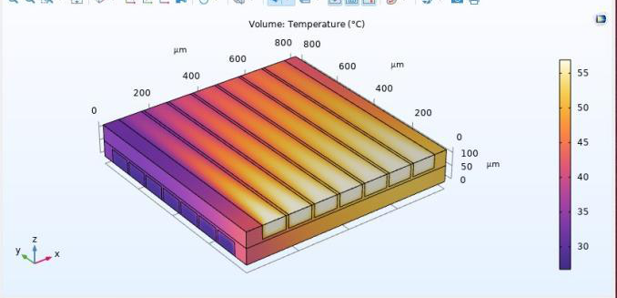
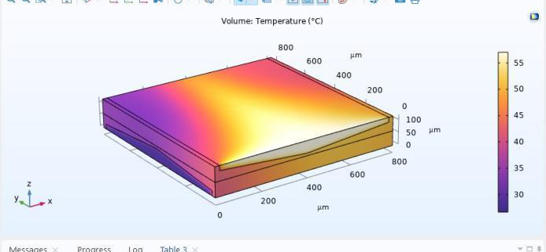
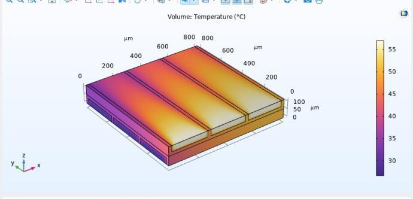

Cross‑Flow Heat Exchanger Channel Geometry Study
55.6%higher heat transfer coefficient

Key challenge
With size, inlet temperatures and flow fixed, changing only the rectangular channel dimensions raised the heat transfer coefficient from 3379.9 to 5260.8 W/m²K, up 55.6 percent.
- Domain
- Heat transfer simulation
- Year
- 2025
- Team
- Team of 4
- Course
- ME‑333 Heat Transfer
- Tools
- COMSOL Multiphysics
- Result
- Up to 5260.8 W/m²K, 55.6 percent above first
Summary
What
Conjugate heat transfer simulations of cross‑flow heat exchanger models with different water channel shapes and sizes in COMSOL Multiphysics.
Key challenge
With size, inlet temperatures and flow fixed, changing only the rectangular channel dimensions raised the heat transfer coefficient from 3379.9 to 5260.8 W/m²K, up 55.6 percent.
Results
- Four finalised layouts ranged from about 3,380 to 5,261 W/m²K.
- Circular, nebula, trapezoidal and triangular channel shapes gave lower coefficients and were dropped.
Problem
Cross‑flow exchangers are compact, and channel shape affects contact area, residence time and velocity profile. The study compares the heat transfer coefficient of several channel geometries with the same boundary conditions and the same overall exchanger size.
Method
- 2D COMSOL Multiphysics model, steady state, with Laminar Flow coupled to Heat Transfer in Fluids for conjugate heat transfer between fluid and solid walls.
- Water on both sides, with a hot inlet at 330 K and a cold inlet at 300 K, both at 0.05 m/s. Outlets at ambient pressure and no‑slip walls.
- Assumptions: incompressible, laminar, constant properties, no radiation or gravity and no phase change.
- Structured quadrilateral mesh with local refinement near fluid‑solid interfaces.
- Held the overall exchanger size fixed while varying channel dimensions. The four finalised models vary rectangular channel dimensions, and circular, nebula, trapezoidal and triangular shapes were tried and dropped.
- Heat transfer coefficient taken from surface integrals of heat flux and temperature difference.
Equations
- EQ. 1
- EQ. 2
Results
The four finalised models give heat transfer coefficients of 3379.9, 4092.2, 4192.4 and 5260.8 W/m²K. The fourth is 55.6 percent above the first, which serves as the baseline. The other shapes tried gave lower coefficients and were not finalised.






Limitations
- 2D only. A 3D simulation is future work.
- No experimental validation and no mesh independence study.
- Laminar flow and constant property assumptions.
- Pressure drop is not reported.
Tools
- COMSOL Multiphysics